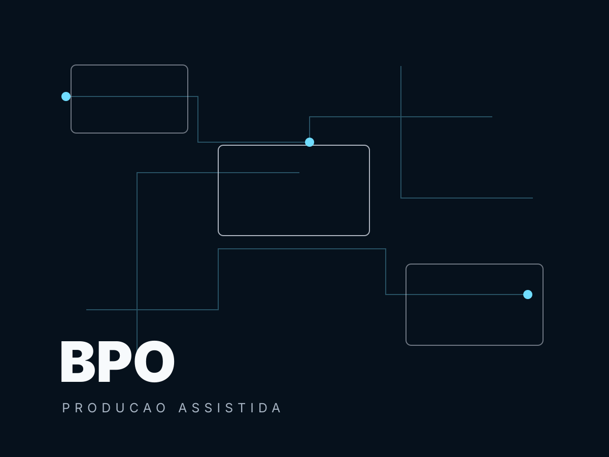

portfolio juridico 2026
Inteligencia artificial para a operacao juridica com metodo, governanca e clareza.
Uma leitura mais editorial da LEX.OS AI: menos excesso visual, mais intencao em cada frente, com caminhos diretos para decidir o proximo passo.
Frente 01
BPO Juridico
Area Producao assistida
Ano 2026
Fluxos operacionais para transformar volume juridico em rotina controlada, com IA como apoio de producao, revisao e priorizacao.
Abrir frente